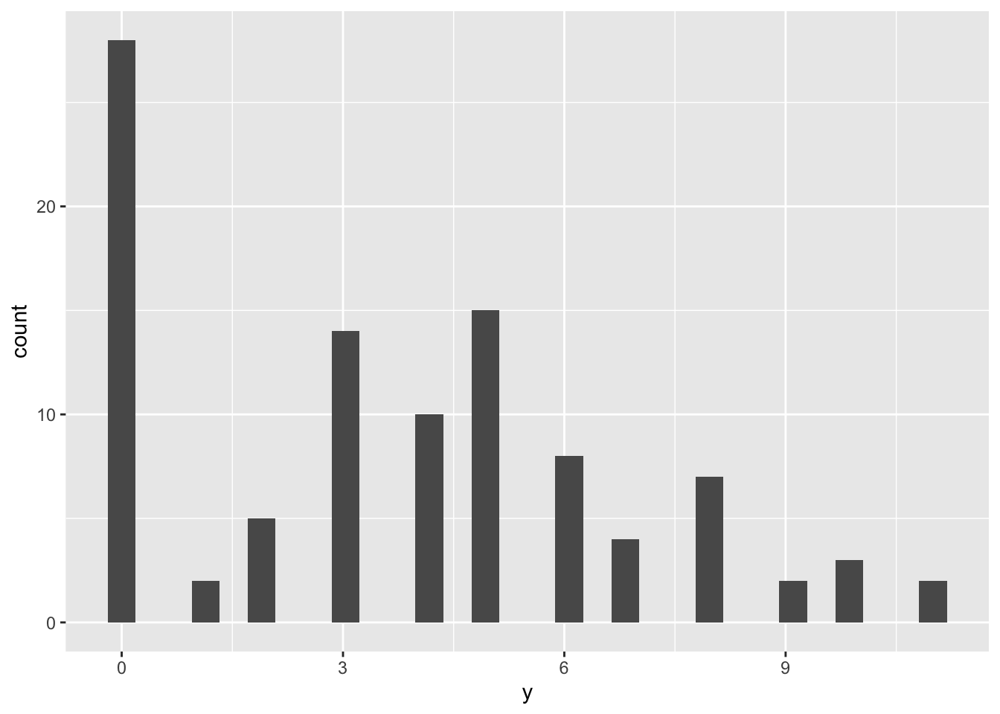
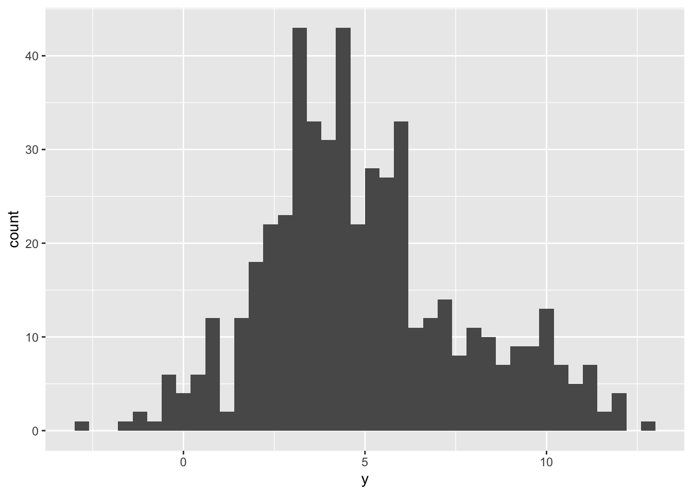
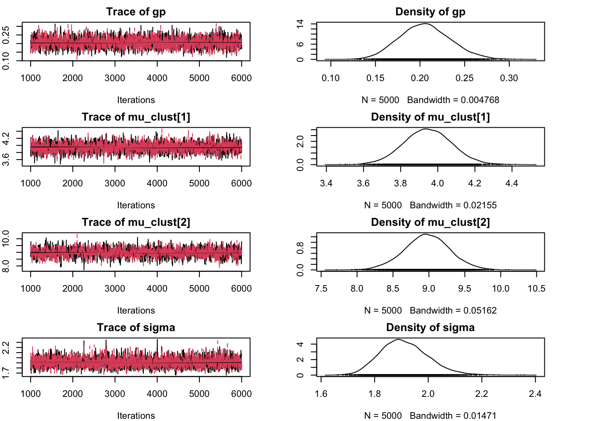

Chapter 10 Three JAGS examples
10.1 Rats - Simple linear regression
We use the data from (Gelfand et al. 1990) and select the 9th observation which features the weight at 5 different time points of a single rat.
We estimate the intercept and the coefficient
in a Bayesian framework using JAGS,
then validate our result with the traditional lm.
This example is taken from (Lunn et al. 2013)
set.seed(101)
# load data
# install.packages("R2MLwiN")
data(rats, package = "R2MLwiN")
y <- unlist(rats[9, 1:5])
x <- c(8, 15, 22, 29, 36)library(R2jags)## Loading required package: rjags## Loading required package: coda## Linked to JAGS 4.3.2## Loaded modules: basemod,bugs##
## Attaching package: 'R2jags'## The following object is masked from 'package:coda':
##
## traceplotmodel_code <- "
model {
for (i in 1:5) {
y[i] ~ dnorm(mu[i], tau)
mu[i] <- alpha + beta*x[i]
}
alpha ~ dnorm(0, 10^-5)
beta ~ dnorm(0, 10^-5)
tau ~ dgamma(0.0001, 0.0001)
sigma2 <- 1 / tau
}
"
model_data <- list(y = y, x = x)
model_params <- c("alpha", "beta", "sigma2")
model_run <- jags(
data = model_data,
parameters.to.save = model_params,
model.file = textConnection(model_code),
n.chains = 2, n.burnin = 500, n.iter = 5000
)## module glm loaded## Compiling model graph
## Resolving undeclared variables
## Allocating nodes
## Graph information:
## Observed stochastic nodes: 5
## Unobserved stochastic nodes: 3
## Total graph size: 31
##
## Initializing modelmodel_run$BUGSoutput## Inference for Bugs model at "4", fit using jags,
## 2 chains, each with 5000 iterations (first 500 discarded), n.thin = 4
## n.sims = 2250 iterations saved
## mean sd 2.5% 25% 50% 75% 97.5% Rhat n.eff
## alpha 123.5 19.8 85.6 114.3 123.7 132.3 160.9 1 1000
## beta 7.3 0.8 5.8 7.0 7.3 7.7 8.9 1 2200
## deviance 39.9 3.8 35.8 37.2 38.9 41.6 49.5 1 2200
## sigma2 450.8 3223.0 40.2 87.5 153.9 294.9 2028.3 1 2200
##
## For each parameter, n.eff is a crude measure of effective sample size,
## and Rhat is the potential scale reduction factor (at convergence, Rhat=1).
##
## DIC info (using the rule, pD = var(deviance)/2)
## pD = 7.2 and DIC = 47.2
## DIC is an estimate of expected predictive error (lower deviance is better).library(tibble)
lmfit <- lm(y ~ x, data = tibble(x = x, y = y))
summary(lmfit)##
## Call:
## lm(formula = y ~ x, data = tibble(x = x, y = y))
##
## Residuals:
## 1 2 3 4 5
## -5.4 2.4 0.2 14.0 -11.2
##
## Coefficients:
## Estimate Std. Error t value Pr(>|t|)
## (Intercept) 123.8857 11.8788 10.43 0.001882 **
## x 7.3143 0.4924 14.86 0.000662 ***
## ---
## Signif. codes: 0 '***' 0.001 '**' 0.01 '*' 0.05 '.' 0.1 ' ' 1
##
## Residual standard error: 10.9 on 3 degrees of freedom
## Multiple R-squared: 0.9866, Adjusted R-squared: 0.9821
## F-statistic: 220.7 on 1 and 3 DF, p-value: 0.000662We obtain same values for \(\alpha\) (intercept) and \(\beta\) (slope).
10.2 ZIP model
We generate some synthetic data according to a set of pre-defined parameters (\(p, \lambda\)).
library(ggplot2)
n <- 100
pp <- .3 # probability of zero event
ll <- 5
zi_sample <- rbinom(n, 1, 1 - pp)
zi_sample[zi_sample == 1] <- rpois(sum(zi_sample), lambda = ll) # sample poisson
tibble(y = zi_sample) %>%
ggplot() +
geom_histogram(aes(y))## `stat_bin()` using `bins = 30`. Pick better value with `binwidth`.
model_code <- "
model {
for (i in 1:N) {
y[i] ~ dpois(m[i])
m[i] <- group[i] * mu
group[i] ~ dbern(p)
}
p ~ dunif(0, 1) # probability of y being drawn from a Poisson
mu ~ dgamma(0.5, 0.0001)
}
"
model_data <- list(y = zi_sample, N = n)
model_params <- c("mu", "p")
model_run <- jags(
data = model_data,
parameters.to.save = model_params,
model.file = textConnection(model_code),
n.chains = 2, n.burnin = 500, n.iter = 2000
)## Compiling model graph
## Resolving undeclared variables
## Allocating nodes
## Graph information:
## Observed stochastic nodes: 100
## Unobserved stochastic nodes: 102
## Total graph size: 307
##
## Initializing modelmodel_run$BUGSoutput## Inference for Bugs model at "5", fit using jags,
## 2 chains, each with 2000 iterations (first 500 discarded)
## n.sims = 3000 iterations saved
## mean sd 2.5% 25% 50% 75% 97.5% Rhat n.eff
## deviance 329.0 6.9 323.5 323.8 324.9 334.0 345.2 1 3000
## mu 5.1 0.3 4.6 5.0 5.1 5.3 5.7 1 1600
## p 0.7 0.0 0.6 0.7 0.7 0.8 0.8 1 1000
##
## For each parameter, n.eff is a crude measure of effective sample size,
## and Rhat is the potential scale reduction factor (at convergence, Rhat=1).
##
## DIC info (using the rule, pD = var(deviance)/2)
## pD = 24.1 and DIC = 353.1
## DIC is an estimate of expected predictive error (lower deviance is better).Check that: - the true values fall inside the 95% CI - Rhat is close to 1 (chain convergence)
10.3 Gaussian Mixture Model (GMM)
GMMs are used for clustering data, i.e. group observations which are similar and come from a Gaussian with same mean. It is called mixture in that every observation comes from a Gaussian with a certain mean, and the mean depends in turn on the component/cluster to which it belongs. Therefore the mean is a random variable selected among multiple means (Categorical distributed).
Other mixture models are the ZIP model (mixture of a Poisson and a Bernoulli distribution) and the Negative Binomial (mixture of a Poisson and a Gamma - details).
We generate a sample from a GMM with just two components, arbitrarily defining the true parameters.
# synthetic dataset
n <- 500
group_prob <- .2
means <- c(4., 9.)
stdev <- 2 # same sd for simplicity
# sample the component to which the observation
mixt_groups <- rbinom(n, 1, group_prob) # bernoulli trials
# sample the Gaussian variable setting the mean
# equal to means[1] or means[2] depending on the
# group to which each observation belongs
mixt_sample <- rnorm(n,
mean = unlist(lapply(mixt_groups, FUN = function(g) means[g + 1])),
sd = stdev
)
# plot the data
tibble(y = mixt_sample) %>%
ggplot() +
geom_histogram(aes(y), binwidth = 0.4)
model_code <- "
model {
for(i in 1:N) {
y[i] ~ dnorm(mu[i] , tau)
mu[i] <- mu_clust[clust[i] + 1]
clust[i] ~ dbern(gp)
}
# priors
gp ~ dbeta(1, 1) # uniform prior
tau ~ dgamma(0.01, 0.01)
sigma <- sqrt(1/tau)
mu_clust_raw[1] ~ dnorm(0, 10^-2)
mu_clust_raw[2] ~ dnorm(0, 10^-2)
mu_clust <- sort(mu_clust_raw) # ensure order to prevent label switch
}
"
model_data <- list(y = mixt_sample, N = n)
# save the parameters and, optionally, the
# `clust` variable representing the labeling
# of each observation (clust[i] = 1 if y[i] is found
# to belong to the second cluster, 0 otherwise)
model_params <- c(
"mu_clust", "gp", "sigma"
# , "clust"
)
model_run <- jags(
data = model_data,
parameters.to.save = model_params,
model.file = textConnection(model_code),
n.chains = 2, n.burnin = 1000, n.iter = 5000
)## Compiling model graph
## Resolving undeclared variables
## Allocating nodes
## Graph information:
## Observed stochastic nodes: 500
## Unobserved stochastic nodes: 504
## Total graph size: 2018
##
## Initializing modelmodel_run$BUGSoutput## Inference for Bugs model at "6", fit using jags,
## 2 chains, each with 5000 iterations (first 1000 discarded), n.thin = 4
## n.sims = 2000 iterations saved
## mean sd 2.5% 25% 50% 75% 97.5% Rhat n.eff
## deviance 2066.9 33.3 2009.2 2043.6 2062.9 2087.4 2138.1 1 2000
## gp 0.2 0.0 0.2 0.2 0.2 0.2 0.3 1 1700
## mu_clust[1] 4.0 0.1 3.7 3.9 4.0 4.0 4.2 1 1900
## mu_clust[2] 9.0 0.3 8.4 8.8 9.0 9.2 9.6 1 330
## sigma 1.9 0.1 1.8 1.9 1.9 2.0 2.1 1 2000
##
## For each parameter, n.eff is a crude measure of effective sample size,
## and Rhat is the potential scale reduction factor (at convergence, Rhat=1).
##
## DIC info (using the rule, pD = var(deviance)/2)
## pD = 555.0 and DIC = 2621.9
## DIC is an estimate of expected predictive error (lower deviance is better).We can plot the chain samples in order to verify that the components correctly represent the two clusters.
library(coda)
jags_model <- jags.model(
file = textConnection(model_code),
data = model_data,
n.chains = 2,
n.adapt = 1000
)## Compiling model graph
## Resolving undeclared variables
## Allocating nodes
## Graph information:
## Observed stochastic nodes: 500
## Unobserved stochastic nodes: 504
## Total graph size: 2018
##
## Initializing modelsamps <- coda.samples(jags_model, model_params, n.iter = 5000)
par(mar = c(4, 2, 2, 4)) # correct plot size
plot(samps)